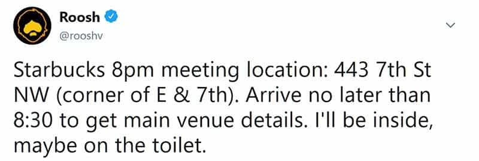
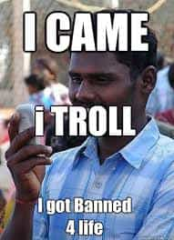

Daryush "Roosh" Valizadeh created ROK in October 2012. You can visit his blog at RooshV.com or follow him on Twitter and Facebook.


On Saturday I drove to the nearest Metro station two hours before the 8pm scheduled start of my first happy hour in two years. While waiting for a train to the city, I was recognized by a young man wearing a cowboy hat. We sat in the same train car and he told me how he’s doing well meeting women at dance events, though SJWs have infiltrated them. He has to be careful not to say anything politically incorrect.
I got off at the Gallery Place station and walked around until 7:30pm before posting the Starbucks meeting location on Twitter. For the next twenty minutes, I mentally rehearsed all the bad things that could happen, but I was feeling confident that the event would go off smoothly since only one media article was written about it. I learned that a substantial flurry of articles needs to be published for the elite to activate their SJW foot soldiers.

At 7:50pm, I stood across the street from the Starbucks. I saw a friend in front and waved him over. Then four more men recognized me. All five of us went inside at 7:55. Starting at 8, the stream of men flowing into the cafe was steady. If a man made lingering eye contact with me, I knew that he knew. I handed out fortune cookie slips of paper that had the location of the main event at a bar two blocks down 7th street.
A Starbucks barista came up to the group and said, “Is there anyone here named Roosh? Someone is on the phone for him.” A prank caller. I did not imagine this in my mental rehearsals. I was hesitant to admit that there was a Roosh present in case it was a trap. “There is no one here named Roosh,” I said. The barista left with a skeptical look on his face.
We spread the bathroom code “2018” amongst ourselves to take advantage of the corporate toilet policy. At least five men used the toilet, perhaps as many as eight. Many real customers confused our group for the line to buy an extra burnt coffee beverage with high fructose corn syrup. The baristas started getting visibly agitated, especially since only one or two men bought something. They started taking away the stools we were using under the guise of preparing the store for closing.
A man arrived who I remember leaving nasty comments on my blog that parroted the leftist line that I abuse women. He approached me with a smile and his hand outstretched. I told him he was not welcome to the event because of the comments he left in the past. His smile evaporated and he walked out. The fact that he expected me to forget his previous behavior suggests that haters are confused fans. Someone who personally attacks or defames me even once will never be allowed into my circle of trust.
When the group grew to 25, employees finally asked us to stand away from the front counter. They stopped short of kicking us out. If they did, I’d seek pro bono legal counsel to sue for discrimination since I’m a person of brown color.
We eventually moved outside and waited five extra minutes to catch the late stragglers. During this time, one attendee, an Indian man, said, “Roosh, you look small. You need to hit the gym.” I raised one eyebrow and looked at his overweight physique that he tried to hide with dark clothing. I replied, “But you’re fat! Get fit and then you can make fun of me all you want.” We had a good laugh. Indians are the original trolls so I stay extra aware when I’m around them.

At 8:35, I led the group of 40 men down the sidewalk to the bar. It turns out that the fortune cookie slips weren’t necessary. I said to them, “I wish I had some kind of banner or battle flag.” If we were all ISIS terrorists with powerful weapons, and took elevated positions, we could easily conquer several city blocks. Even if the only weapon is our minds, there is no limit to what we could accomplish if we stuck together, planned, and organized. This is why they stopped us in 2016.
We arrived at the bar in Chinatown. The bearded bartender was visibly excited at the unexpected influx of customers. The men started to relax because we were now in a location that was not posted publicly. I did my best to have a conversation with each one. They varied greatly in upbringing, race, employment, and life goals.
I met men fresh out of high school who were just beginning their life’s journey and others in their 50’s with children and a divorce under their belt. Some men worked in the Federal government and talked predominately about political issues (this is DC, after all), others were businessmen trying to make a career without getting shut down for their beliefs, and also present were RVF poonhounds who picked my brain for foreign countries that had the best women. It was the kind of diversity I love.
There was a brown mural of seabirds hanging in the hallway. Whenever a man asked me for a selfie, I suggested we use it as a backdrop. The hallway became a sort of gathering point to have deeper discussions. Several men gave me condolences for my sister’s death, asking me how I was doing. “As good as I can,” I would reply.
A woman I didn’t recognize approached me. Apparently one of the attendees told her who I was. She was lamentably overweight but had a friendly demeanor.
“So you’re a pickup artist,” she said.
“I am?”
“Well that’s what it says on your Wikipedia.”
One of the guys started filming her, thinking that she was attacking me, but I told him that it was okay and he put his phone down. It was clear that she loved getting the attention of several men at once and wanted to keep the conversation going as long as possible, but she would have to increase her beauty for me to give her more than three minutes of my time. After showing her my “straight pride” salute, which is really the same as a black power salute, I introduced her to a man I named Chad because he was a tall and white with a square jaw. I told everyone that if I have a son, I’m naming him Chad.
As the event winded down, I started to wonder where the resistance was. Two years ago, the death threats flowed in at a concerning clip, but now there was nothing. To go from 100 to 0 suggests that liberal protests are not organic. A switch must be flipped for them to be activated in a MK Ultra style. If you told me that someone at a high level gets to decide whether an attack takes place or not, I would believe it. I now have enough experience where I think I can predict if trouble will happen via a “Defcock” Warning System that I plan on using for future gatherings.
Defcock Green: Practically no media coverage or leftist discussion online. Protesters or disruptions are not expected.
Defcock Yellow: Moderate media attention but no online organizing spotted. Stay alert at the beginning of the meetup.
Defcock Red: Heavy media coverage. Protesters have been organizing online to shut down the event. Likely police presence. Wear sunglasses to guard against doxing attempts from women with Krusty The Clown hair.
This event was Defcock Green all the way through by the time I left the bar at 1am to catch the last Metro train home. Maybe I was being too paranoid by applying counter-terrorist tactics to plan a friendly happy hour, but I don’t mind putting in the time so none of my readers are injured, doxed, or arrested.
The world is getting crazier by the year, and since we possess masculine beliefs, we have to take extra care to stay safe. I believe I have the experience to do that for the men who come out to meet me, and can’t wait until my new book is released so I can hold more events around the country.
Read Next: Washington D.C. Has Bottomed Out